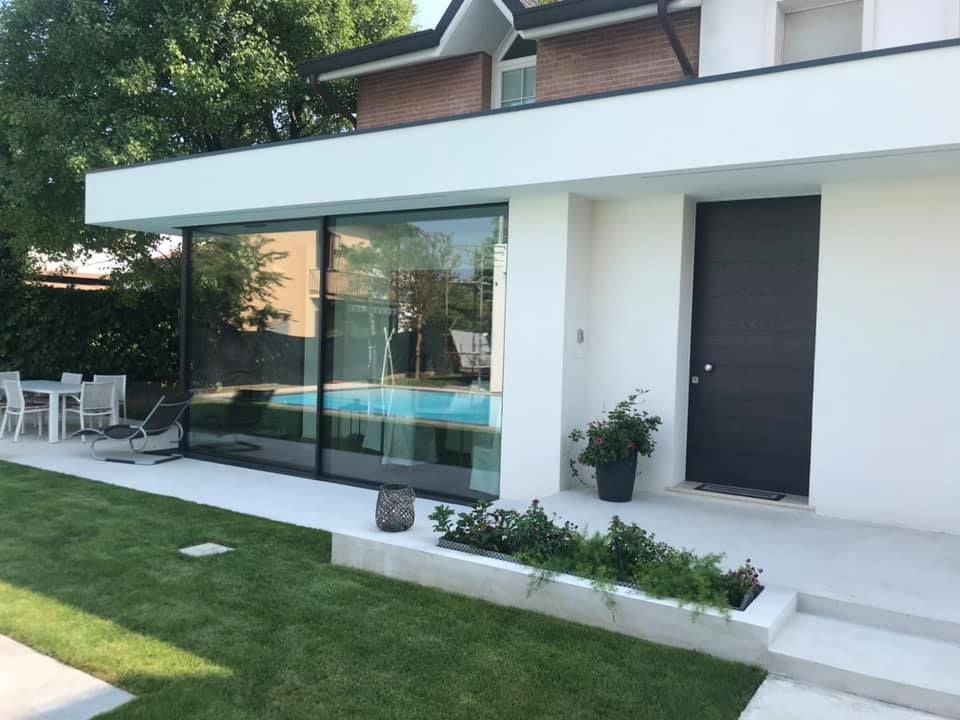
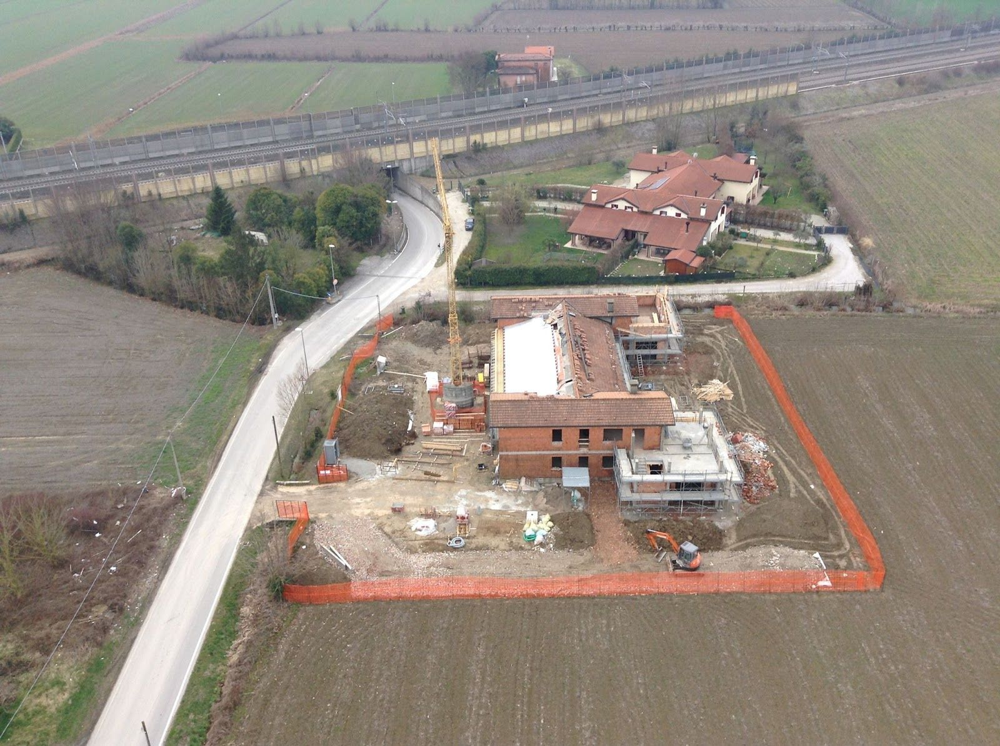
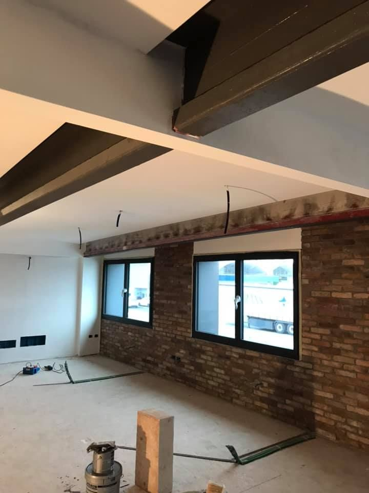
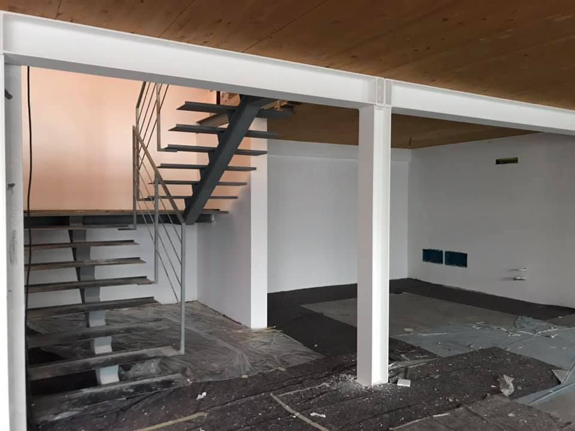

Costruiamo e restauriamo, da tre generazioni.
Impresa di costruzioni ad Albignasego, Padova: case nuove, restauro di edifici storici, antisismico e lavori in edifici che restano aperti.

- 1954l'esperienza da cui partiamo
- 3generazioni in impresa
- 4,6su Google, 7 recensioni
- SOA · ANCEattestazione e associazione di categoria
Dal rilievo al restauro
Un edificio storico, messo in sicurezza un passo alla volta.
- Rilievo con il droneTetti, cornicioni e facciate visti da vicino, senza ponteggi.
- DiagnosiCrepe e punti deboli segnati sul rilievo.
- Consolidamento antisismicoCatene, capochiave e cordolo legano muri e solai.
- RestauroIntonaci, cornici e serramenti, nel rispetto del metodo originale.
- ConsegnaLavori chiusi e controllati insieme a voi.
Disegno indicativo
Settori
Dal convento al negozio in centro.
Lavoriamo per enti pubblici, famiglie e aziende. Cambia il cantiere, resta il metodo: un solo interlocutore, un ufficio tecnico interno, tempi e budget scritti.
- 01
Pubblico
Edifici pubblici e opere per enti, compreso il patrimonio vincolato.
- 02
Nuove costruzioni
Case e palazzine dall'idea iniziale alla realizzazione completa, anche chiavi in mano.
- 03
Restauro
Fabbricati storici, ripercorrendo il metodo costruttivo originale.
- 04
Commerciale e industriale
Nuove sedi, ampliamenti e manutenzione di siti produttivi e centri direzionali.
- 05
Farmaceutico
Ristrutturazioni e ampliamenti secondo le norme del settore.
- 06
Retail
Negozi in centro storico, con il cantiere organizzato attorno all'attività che resta aperta.
Lavori
Alcuni cantieri che portano la nostra firma.
- 01Convento dei Frati Cappuccini di San LeopoldoPadovaRestauro
- 02Abbazia dei Santi Quattro CoronatiCingoli (MC)Restauro
- 03Idrovora GrompaMegliadino San Vitale (PD)Antisismico
- 04Negozio H&M nel centro storicoPadovaRetail
- 05Centro Direzionale FranceschiniPadovaCommerciale
- 06Intervento nel centro di CopenaghenDanimarcaEstero



Abbiamo lavorato anche in Francia, Danimarca e Germania.
Servizi
Un solo interlocutore, dall'inizio alla fine.
Chiavi in mano
Un unico referente per tutto il lavoro. L'ufficio tecnico interno coordina le nostre squadre e una rete di professionisti selezionati per le opere specialistiche.
Restauro conservativo e ristrutturazioni
Recupero di edifici del passato, anche vincolati, unendo tecniche di oggi e metodi tramandati.
Antisismico
Rinforzi strutturali su edifici esistenti, per renderli sicuri senza snaturarli.
Manutenzione edifici
Manutenzione ordinaria e straordinaria, con maestranze dedicate a questo lavoro.
Bioedilizia
Materiali e scelte che riducono l'impatto dell'edificio e i consumi di chi ci vive.
Rilievo con i droni
Ispezioni di tetti e facciate in sicurezza e controllo delle fasi di cantiere fino alla chiusura dei lavori.
L'impresa
Tradizione di famiglia, tecnica di oggi.
Zampiron Costruzioni ha sede ad Albignasego, alle porte di Padova. L'esperienza parte dal 1954 e passa da tre generazioni: chi ci chiama trova un'impresa che conosce il territorio e i suoi edifici.
Formiamo le nostre maestranze, controlliamo il cantiere ogni giorno e seguiamo il cliente su tempi e costi. Il rapporto di fiducia vale più di qualsiasi singolo lavoro.
"Grandi professionisti"
Una recensione su Google
Come lavoriamo
Quattro passi, sempre gli stessi.
- 01
Sopralluogo
Vediamo l'edificio e ascoltiamo cosa vi serve.
- 02
Preventivo
Lavorazioni, tempi e costi per iscritto.
- 03
Cantiere
Un referente unico vi aggiorna fase per fase.
- 04
Consegna
Controlliamo insieme il lavoro finito.
Contatti
Un edificio da costruire o da salvare? Parliamone.
Chiamate l'ufficio o scriveteci due righe: vi richiamiamo per fissare un sopralluogo.
049 880 8574 info@zampiron.itVia A. Volta 74
35020 Albignasego (PD)
Apertura dal lunedì alle 7:30
Apri in Google Maps